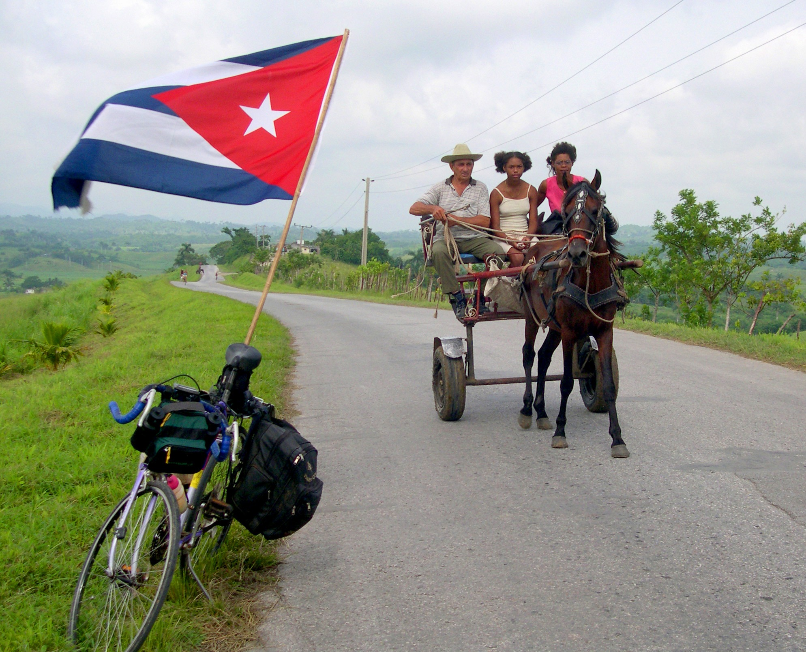
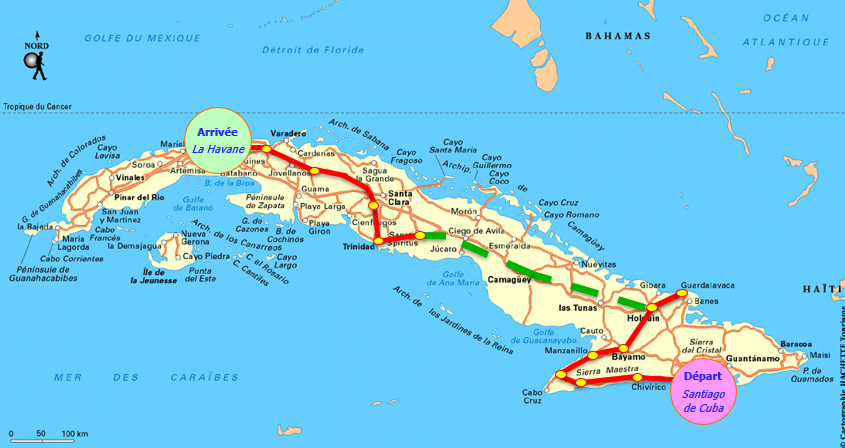
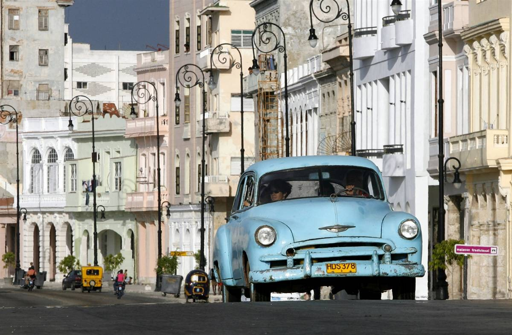
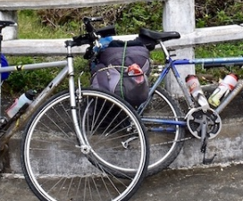
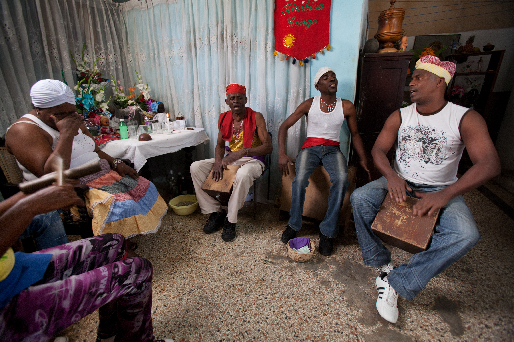
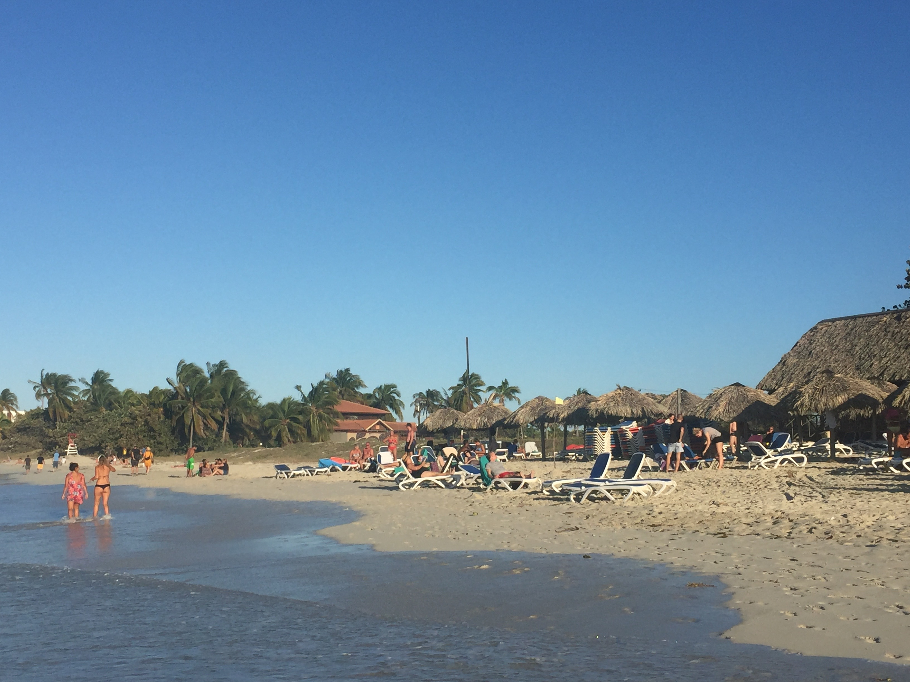
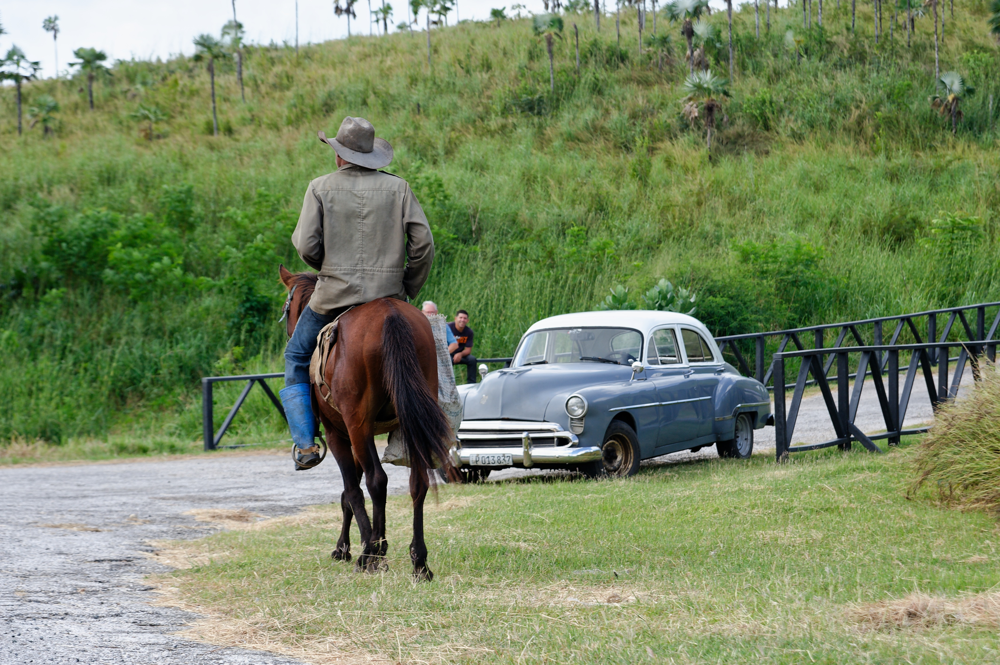
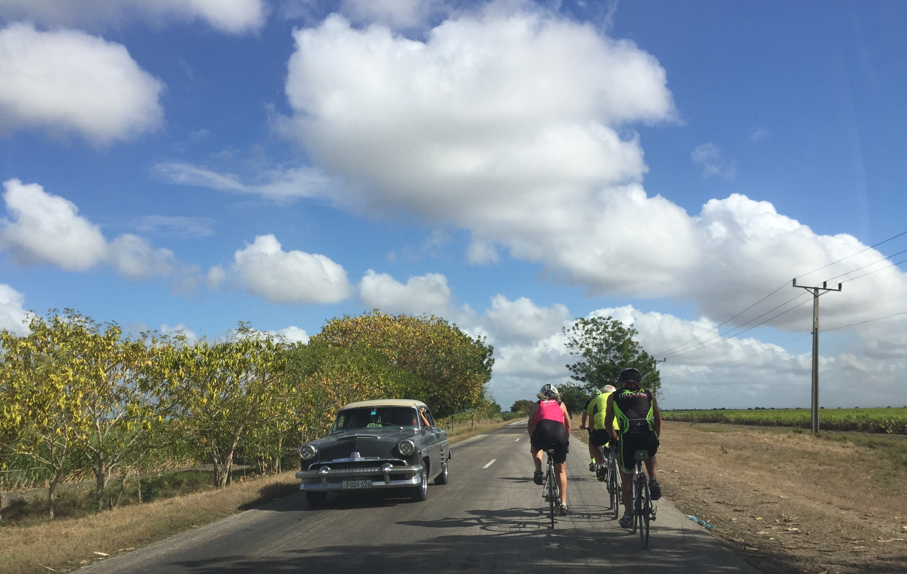

IDÉE VOYAGE EN PETIT GROUPE
Cuba à vélo
Santiago → La Havane
🚴 12 étapes · 1 007 km
🏔️ Sierra Maestra
Nuits chez l'habitant · Voiture suiveuse · ¡Vamos!
vpdvoyages.com

🚵 LE CONCEPT Est → Ouest
22 jours, plus de 1 000 km de paysages pour cyclistes confirmés. Des montagnes de la Sierra Maestra aux rues de La Havane, avec un détour possible par les mogotes de Viñales. Montées exigeantes, routes ondulantes, chaleur tropicale – chaque coup de pédale révèle la beauté brute de l'île « crocodile ».
✅ Cyclistes confirmés
🔥 12 étapes 40–125 km
🏡 Immersion totale
🚗 Voiture suiveuse
Programme validé à l'unanimité
📊 EN CHIFFRES
1 007
km
12
étapes vélo
23
nuits chez l'hab.
Parcours type Santiago → Chivirico → Pilón → Niquero → Manzanillo → Bayamo → Holguín → (transfert) Sancti Spíritus → Trinidad → Manicaragua → Cascajal → Matanzas → La Havane.
📍 Option Viñales 🚴 39 à 123 km

🗺️ LES ÉTAPES Est
1 Santiago → Chivirico 78 km
2 Chivirico → Pilón 111 km
3 Pilón → Niquero 39 km
4 Niquero → Manzanillo 72 km
5 Manzanillo → Bayamo 67 km
6 Bayamo → Holguín 72 km
🚌 Transfert Holguín → Sancti Spíritus (jour 9)

🗺️ LES ÉTAPES Centre & Ouest
7 Holguín → Guardalavaca A/R 110 km
T Holguín → Sancti Spíritus transfert
8 Sancti Spíritus → Trinidad 71 km
9 Trinidad → Manicaragua 61–79 km
10 Manicaragua → Cascajal 99–103 km
11-12 Cascajal → Matanzas → La Havane 123 + 104 km

📅 EXEMPLE DE PROGRAMME 22 jours
Jours 1–2 Arrivée Santiago · Visite ville
Jours 3–8 Étapes 1 à 6 · Santiago → Holguín
Jour 9 Transfert Holguín → Sancti Spíritus
Jours 10–14 Étapes 8 à 12 · Trinidad → La Havane
Jours 15–20 La Havane + option Viñales
Jours 21–22 Fin de séjour · Vol retour

🏠 LOGEMENT & ASSISTANCE
23 nuits chez l'habitant
chambre double (matrimonial/twin)
chambre double (matrimonial/twin)
🚗 Voiture suiveuse
bagages, mécanique, ravitaillement
bagages, mécanique, ravitaillement
Repas · tous les déjeuners ensemble, soirées libres sauf 3 (soirée cubaine, despedida, journée paysanne)
👥 Petit groupe · programme validé à l'unanimité · guide expérimenté
🛂 AVANT LE DÉPART
- Passeport & visa – valable 6 mois après retour, carte de tourisme
- Assurance santé obligatoire (attestation via carte Visa)
- Vélo – carton de transport, entretien et pièces recommandés
- Niveau cyclistes confirmés (étapes jusqu'à 125 km, dénivelés Sierra & Topes de Collantes)

💵 SUR PLACE
Monnaie Pesos cubains (CUP) – change en banque/Cadeca
Prises américaine (double plat) 110/220 V – adaptateur recommandé
Sécurité Cuba = pays le plus sécuritaire d'Amérique latine
Ambassade Calle 14 n°312, Miramar (Playa), La Havane

✅ FORMULE sérénité
✈️ Vol A/R
🎫 Carte de tourisme
🚐 Transferts aéroport
🏡 23 nuits chez l'hab.
🍳 petits-déjeuners + 21 déjeuners
🚴 12 étapes vélo + 1 transfert
🚗 Voiture suiveuse
🎶 Soirée cubaine + despedida
🐖 Journée paysanne (cochon de lait)
🏛️ Visites des villes étapes
🧭 Guide accompagnateur
🌿 Option Viñales
¡Vamos a pedalear por Cuba!
Bon coup de pédale sur les routes des Caraïbes
Santiago · Trinidad · La Havane
1 007 km
🚴♂️ cyclistes confirmés
🇨🇺 Cuba



Photos : dossier images/ · Cuba à vélo · Santiago → La Havane